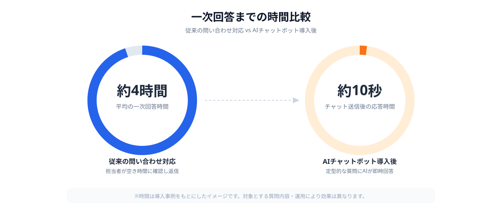
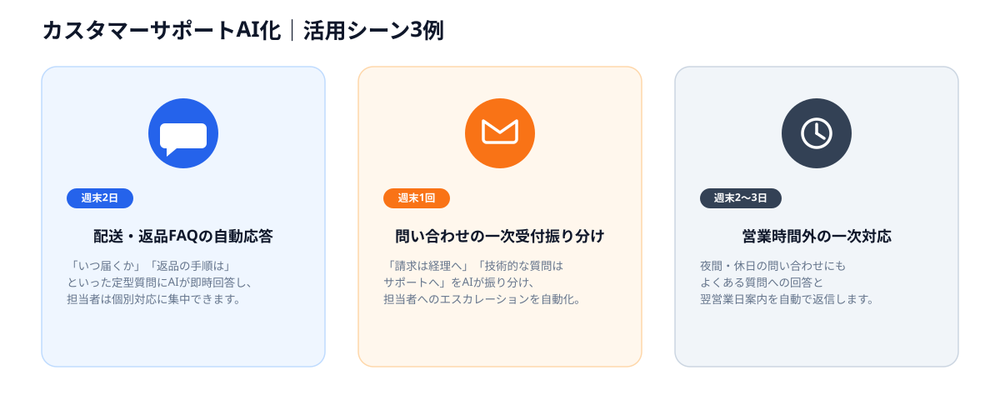

「同じ質問への回答に何度も時間を取られている」「営業時間外の問い合わせに翌営業日まで対応できない」——カスタマーサポートの現場では、人手不足とお問い合わせ件数の増加がじわじわと積み重なっています。
この負荷を軽くする手段として注目されているのがAIチャットボットによる一次対応の自動化です。ただし、「チャットボット導入」と聞くと大掛かりなCRM刷新を想像してしまい、検討が後回しになっている企業も少なくありません。
この記事では、カスタマーサポートの負荷がなぜ増えやすいのか、AIチャットボットで実際にできること・できないこと、そしてスポット発注でFAQ整備から導入までを低コスト・短期間に進める具体的な手順を解説します。
「問い合わせ対応に人手が追いつかない」が起こる理由
カスタマーサポートの負荷増加は、多くの企業が共通して抱える課題です。問い合わせ内容の多くが「過去にも同じ質問が来ている」定型的な内容であるにもかかわらず、毎回担当者が個別に調べて返信しているケースが珍しくありません。
それでも対応が後回しになる理由は大きく3つあります。まず、「チャットボット導入」という発想が、CRMやヘルプデスクツール全体の刷新と結びついてしまうことです。一次対応を自動化したいだけなのに、問い合わせ管理システム全体の入れ替えが提案され、予算も期間も合わずに頓挫してしまいます。
次に、「AIの回答が間違っていたらどうするか」という品質への不安です。誤った回答をお客様に返してしまうリスクを懸念し、検討自体が止まってしまう企業も多くあります。
そして、FAQの整備とチャットボットの実装を両方担える人材が社内にいないという問題です。仕組みとしては確立されていても、自社の問い合わせ内容に合わせて構築できるエンジニアが身近にいなければ、構想のまま終わってしまいます。
- 「一次対応の自動化」がCRM・ヘルプデスク全体の刷新と結びつき、予算が合わなくなる
- AIの誤回答によってお客様対応の品質が落ちることへの不安がある
- FAQ整備とチャットボット実装を両方担える人材が社内にいない
これらの壁を越える現実的な方法が、「対象とする問い合わせ範囲を絞って小さく作る」アプローチをスポット発注で進めることです。すべての問い合わせ対応を一度にAI化するのではなく、まずは定型的な質問が多い領域から自動化することで、低コストかつ短期間で効果を確認できます。
AIチャットボットでできること・できないこと
AIチャットボットは、よくある質問とその回答（FAQ）をもとに、お客様からの問い合わせ文章に対して近い意味の質問を探し出し、該当する回答を提示する仕組みです。キーワードが完全一致しなくても、「届いた商品が違う」「注文をキャンセルしたい」といった自然な言い回しに対応できる点が、従来のキーワード検索型FAQとの違いです。
一方で、個別の契約条件や過去のやり取りを踏まえた判断が必要な問い合わせには不向きです。「自分の場合はどうなりますか」という個別性の高い質問は、AIが無理に答えるのではなく、有人対応へスムーズに引き継ぐ設計にしておく必要があります。
発注者側に求められるのは、「どの範囲をAIに任せ、どこから有人対応に切り替えるか」を明確にすることであり、回答ロジックの実装自体はエンジニアに任せることができます。
大規模CRM導入とスポット発注、進め方の違い
カスタマーサポートのAI化をシステム会社にフルセットで依頼する場合、CRM選定・全チャネル統合・運用フロー設計までを一括で提案されることが多く、対象とする問い合わせの種類が多いほど期間・費用ともに膨らみやすくなります。一方、対象を「まずはこのFAQ群だけ」と絞り込んでスポット発注すれば、回答ロジックの構築自体に集中できるため、規模を大幅に圧縮できます。

もちろん、スポット発注は「全チャネル・全問い合わせを横断的に統合する」ような大規模案件には向きません。しかし、「配送に関する質問だけ」「料金プランに関する質問だけ」といった範囲が決まった一次対応の自動化であれば、スポット発注の方が着手から効果確認までのスピードは速くなりやすいというのが実態です。
スポット発注でチャットボットを導入する4ステップ
実際にカスタマーサポートのAI化をスポット発注で進める場合、次の4ステップで検討すると進めやすくなります。
STEP1｜よくある質問（FAQ）を洗い出す
最初に行うべきは、「すべての問い合わせをAI化したい」という大きな目標を、具体的な1つの質問群まで絞り込むことです。「配送・返品に関する質問」「料金プランに関する質問」「アカウント設定に関する質問」など、問い合わせ件数が多く、回答内容が定型化しやすい領域がスポット発注に向いています。
対象を絞り込む際は、過去の問い合わせ履歴やメールの履歴から「同じ質問が繰り返し発生している」ものを優先すると、導入後の効果を実感しやすくなります。
STEP2｜回答ロジック・有人対応への切り替え基準を設計する
対象とする質問群が決まったら、エンジニアがFAQをAIが扱いやすい形に整理し、お客様の質問に対して関連する回答を探し出せる仕組みを構築します。「AIが自信を持てない質問は有人対応に引き継ぐ」といった切り替え基準を決めるのもこの段階です。
品質への不安がある場合は、「絶対に誤回答を避けたい質問」をあらかじめ伝えておくことで、その範囲はAIの回答対象から外し、有人対応に振り分ける設計にしてもらえます。
STEP3｜チャットUIで試験運用する
回答ロジックができたら、チャット形式の画面を用意し、社内のサポート担当者にまず使ってもらいます。「思っていた回答と違う」「この質問も対象に含めたい」といったフィードバックをもとに、対象範囲や回答の精度を調整していきます。
このプロトタイプ作成は、既存のAI APIやチャットボットのテンプレートを組み合わせる実装が中心になることが多く、ゼロからの大規模開発に比べて短期間で形にしやすいのが特徴です。週末2〜3日のスポット稼働で、実際の問い合わせ文を使った動作確認まで進められる場合があります。
STEP4｜本番チャネルに展開し、回答を継続改善する
試験運用で一定の精度が確認できたら、まずは1つのチャネル（自社サイトのチャット窓口など）に限定して本番展開します。全チャネルへの展開を急がず、実際の回答ログを見ながら対象とする質問を広げていくことで、運用に合った形に自然と仕上がっていきます。
実際にスポット発注で実現したチャットボット導入の事例

ANKENを通じたスポット発注の事例から、実際にどのようなチャットボット導入が実現しているかを紹介します。
まず多いのは、配送・返品に関するFAQの自動応答です。「いつ届くか」「返品の手順を知りたい」といった定型的な質問にAIが即時回答することで、担当者が個別対応すべき問い合わせに集中できるようになった事例があります。週末2日のスポット稼働でプロトタイプまで仕上げています。
次に、問い合わせ内容に応じた一次受付の振り分けです。「請求に関する質問は経理担当へ」「技術的な質問はサポートチームへ」といった振り分けをAIが行い、担当者へのエスカレーションを自動化した仕組みを、週末1回のスポット稼働で構築した例があります。
また、営業時間外の一次対応も需要が増えています。営業時間外の問い合わせに対して、よくある質問への回答と「翌営業日に担当者から連絡する」旨の案内を自動化し、お客様を待たせる時間を減らした事例を、週末2〜3日のスポット作業で仕上げています。
- 対象とする問い合わせの範囲が明確で、回答内容が定型化しやすい
- 同じ質問が繰り返し発生しており、効果を実感しやすい
- 既存のAI APIやチャットボットのテンプレートを組み合わせて実装できる
- サポート担当者からすぐにフィードバックを得られる体制がある
共通しているのは、「まず1つの質問群・1つのチャネルだけをAI化する」というスモールスタートの姿勢です。全問い合わせを一気に自動化しようとせず、効果がわかりやすい範囲から着手することで、スポット発注でも確実に成果を出しやすくなります。
まとめ・ANKENへのご相談
カスタマーサポートのAI化は、「全チャネル・全問い合わせを一度に刷新する」ことを前提にすると予算も期間も大きくなりがちですが、配送・料金・アカウントといった質問群単位で切り出して依頼することで、低コスト・短期間での実現が可能になります。
重要なのは「対象とする質問範囲を1つに絞ること」と「有人対応への切り替え基準を最初に決めること」です。この2点を押さえたうえでANKENに相談いただければ、問い合わせ内容や運用に合ったAIエンジニアを提案します。過去の問い合わせ履歴のサンプルだけでも構いません。固定費ゼロ・週末スポットから、カスタマーサポートのAI化を進められます。
配送・料金・アカウントなど、1つの質問群からの相談を歓迎します。固定費ゼロ・週末スポットから依頼可能です。
👉 無料でスポット依頼を相談する初回相談は無料です。要件が固まっていなくてもOKです。